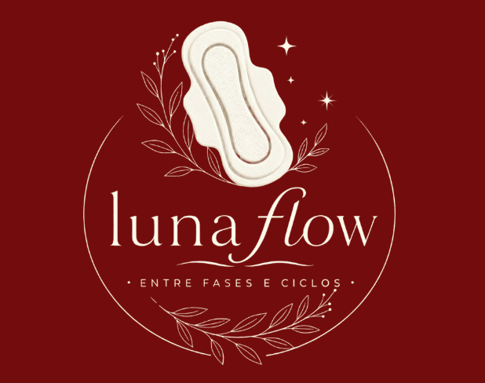

Entre Fases e Ciclos
A LunaFlow é um projeto que propõe a criação de absorventes sustentáveis e acessíveis utilizando resíduos da produção de cerveja artesanal, como o bagaço de malte.
Transformar um resíduo industrial em uma possibilidade de produto de higiene de baixo custo e ecológico, buscando reduzir o impacto ambiental e contribuir para o combate à pobreza menstrual.
O bagaço de malte proveniente da produção de cerveja artesanal é reaproveitado.
O resíduo pode ser transformado em farinha para ser utilizado no desenvolvimento do projeto.
Testes preliminares indicaram boa capacidade de retenção de água e propriedades absorventes promissoras.
O material é estudado para o desenvolvimento de uma alternativa sustentável para higiene menstrual.
Reaproveitamento de resíduos da produção de cerveja artesanal.
Busca reduzir o impacto ambiental causado pelos absorventes descartáveis.
O projeto busca contribuir para o combate à pobreza menstrual.
Transformar um resíduo em uma alternativa ecológica e acessível.
A LunaFlow pesquisa o aproveitamento de resíduos da produção de cerveja artesanal, especialmente o bagaço de malte, para o desenvolvimento de materiais com potencial absorvente.
Pesquisa relacionada aos impactos causados pelo descarte incorreto dos absorventes.
O projeto pesquisou propriedades do extrato de Aloe vera, incluindo características cicatrizantes e antibacterianas.
A fibra de bambu foi estudada como uma alternativa sustentável e por sua capacidade de absorção de umidade.
O bagaço de malte é um resíduo da produção de cerveja artesanal. A LunaFlow estuda o reaproveitamento desse material para uma proposta de produto de higiene sustentável.
Principal resíduo estudado no projeto. A farinha produzida a partir do material apresentou propriedades absorventes promissoras nos testes preliminares.
Material estudado durante a pesquisa devido às suas propriedades fitoterápicas.
Pesquisada como alternativa sustentável devido às suas propriedades naturais.
A HQ Maya – Ciclo de Amor e Cuidado faz parte do projeto LunaFlow e apresenta uma história sobre ciclo, cuidado e informação de forma leve e acessível.
Reaproveitamento de resíduos.
Propriedades absorventes promissoras.
Proposta de um produto de baixo custo.
Busca reduzir impactos ambientais.
Relacionado aos objetivos de saúde e bem-estar.
O reino de Hormonia está passando por mudanças misteriosas. Diferentes emoções surgem e precisam aprender a trabalhar juntas para restaurar o equilíbrio do reino.
As personagens representam sentimentos comuns durante o período menstrual e possuem poderes únicos.
É um projeto que propõe o desenvolvimento de absorventes sustentáveis e acessíveis.
Principalmente o bagaço de malte proveniente da produção de cerveja artesanal.
O projeto busca reaproveitar esse resíduo e estudar suas propriedades absorventes.
Sim. Testes preliminares indicaram boa retenção de água e propriedades absorventes promissoras.
Projeto desenvolvido por:
Agradecemos aos professores Rafael, Edmar e Oseias pelo apoio, dedicação e orientação ao longo do desenvolvimento do projeto.
📧 Email: lunaflow@gmail.com
📱 Instagram: @lunaflow